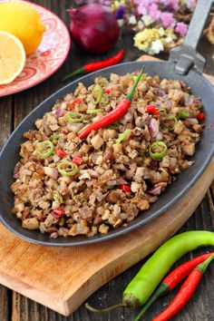

1 lb pork head, ears, and liver, chopped into small pieces
1 large onion, chopped
4 cloves garlic, minced
2 tbsp soy sauce
2 tbsp vinegar
1 tbsp calamansi juice (or lime juice)
1 tsp salt
1/2 tsp black pepper
2-3 pcs red chili peppers, chopped (optional)
3 tbsp cooking oil
1 egg
1/4 cup mayonnaise
1 tbsp butter
Boil the pig's head in water for about an hour or until tender. Remove from the pot and let it cool.
Cut the pig's head into small pieces and chop them into finer pieces, about the size of minced meat.
Heat a skillet or a wok with cooking oil over medium-high heat.
Add the chopped onions and garlic, and sauté until the onions are translucent.
Add the chopped pig's head and sauté until it is slightly crispy and browned.
Add the chopped chili peppers and continue to sauté for a few minutes.
Pour in the vinegar, soy sauce, and sugar, and stir well.
Season with salt and pepper to taste.
Continue to cook the sisig for a few more minutes until the flavors are well combined and the liquid has been absorbed.
Serve hot with steamed rice and garnish with sliced onion rings and calamansi (Filipino lime) on the side